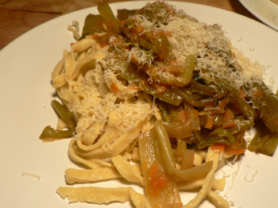

Leland makes fresh pasta
I try to visit my favorite thrift stores, Angel Street and Housing Works, both on 17th Street, every weekend. We furnished half of the apartment on that one block, from the bookshelf to the wine rack. Both have small kitchen sections, and occasionally you see something really special. Last weekend, I got a copy of Richard Olney’s Simple French Food for $4 at Housing Works, and a manual pasta maker from Angel Street for $12. I’d been coveting such a device for a few months, but I wasn’t ready to buy it because I was pretty sure it wouldn’t see much use. And it probably won’t see much use now, but when it’s just $12, it’s time to purchase.
I went right home and whipped up tagliatelle with celery sauce.

Thank god Mark Bittman has a section on how to use a manual pasta maker, because it’s not entirely evident without instructions. You have to thin it first a few times through the lasagna hole, and then pass it through the cutters. Even then, I had plenty of trouble. I later read that it helps to let the dough dry out after thinning it, and then to dry it out more after cutting it. Richard Olney says to hang the strands on a broom stick suspended between two chairs!
After I managed to cut enough for two portions, I put the remaining dough back in the refrigerator (it went in the garbage five days later) and finished dinner. The celery was melting in the Dutch oven, and we were starving. I was terrified that the pasta would fall apart in the boiling water, but it was perfectly easy to cook and delicious to eat.
If any readers use these contraptions regularly, please leave some advice in the comments. How do you keep the pasta from bunching up in the rollers? How do you clean it? What kind of dough works best? I’d love to be able to just throw fresh pasta together whenever the desire strikes me, but it’s hard not to just buy a pound of it from Murray’s for $2.99, or at the ten other stores in walking distance that carry it.
Comments
Yes, making pasta is a messy, time-consuming business, even with an electric machine. I had a hand-cranked machine when I was about your age and used it very infrequently, not usually willing to expend the energy it took, although as you say, home made pasta is delicious.
I read a hilarious story somewhere by someone, and I wish I could remember the author, about Norman Mailer buying his wife one of the first hand-cranked pasta machines on the market, then inviting a bunch of people over to eat home made pasta. They all stood around his Manhattan apartment drinking vodka and eating caviar while she was in the kitchen, for hours. Eventually the wife emerges, covered in flour, hisses “Fuck you!” at Mailer, and storms out the door.
I could really relate to that anecdote, having made pasta with that machine once or twice for guests. Other folks seem to whip up pasta all the time with no trouble, some even mix it up the classic way with a pile of flour on the table, egg in the center, etc. and then roll it out by hand, and they think it’s the easiest thing in the world.
BTW, did you see that Smitten Kitchen has a recipe for pasta on her blog? She says it’s fool-proof.
I had the opportunity to assist friends in making fresh pasta last Christmas. Every sheet of pasta was dusted with flour again before running it through the cutter. It seemed to make the process a bit easier.
Add a comment